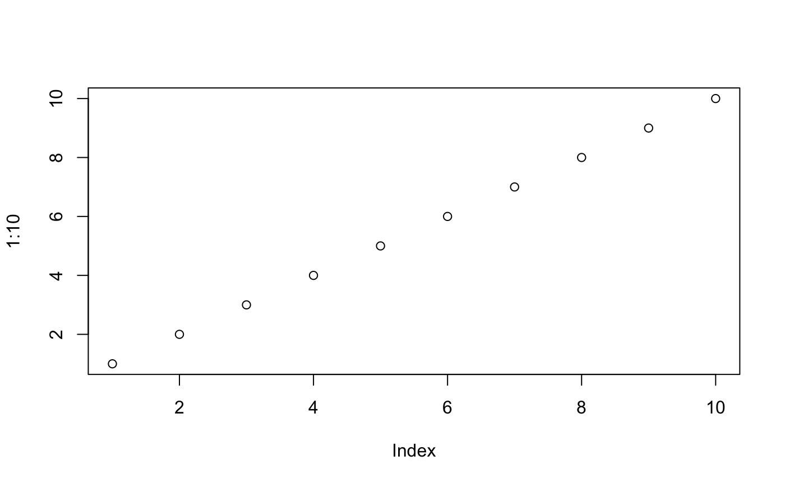
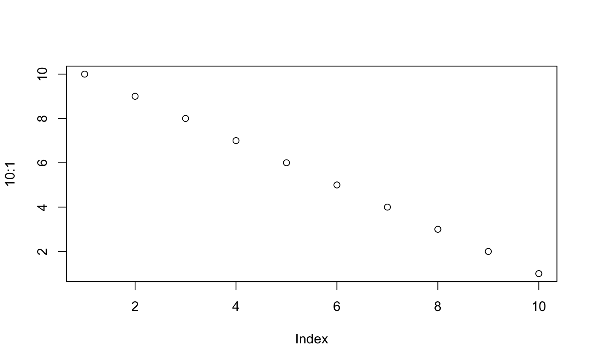

first-vignette.Rmd# Database A
iowa.1915 <- read.csv('/Users/kailinlu/Desktop/QMSSWork/RecordLinking/recordlinker/recordlinker/data/iowa_unique_1915.csv',
stringsAsFactors = F)
# Database B
iowa.1940 <- read.csv('/Users/kailinlu/Desktop/QMSSWork/RecordLinking/recordlinker/recordlinker/data/iowa_unique_1940.csv',
stringsAsFactors = F)
# Check sample of data
print(head(iowa.1915)) ## lname1915 uid1915 yob1915 fname1915
## 1 cutler uid0910071227 1911 donald d
## 2 taylor uid0063131339 1912 homer
## 3 stearnes uid0044088276 1899 earl
## 4 hornaday uid0067053130 1904 theodore
## 5 turner uid0066046148 1907 jack r
## 6 hornston uid1212140433 1911 rudolphprint(head(iowa.1940))## lname1940 hhid yob1940 fname1940
## 1 cutler 19067 1911 donald dean
## 2 taylor 71505 1912 homer ellis
## 3 stearns 109708 1900 earl
## 4 harnaday 108304 1904 theodore i
## 5 turner 105092 1907 jack r
## 6 hornsten 151346 1911 rudolphiowa <- read.csv('/Users/kailinlu/Desktop/QMSSWork/RecordLinking/recordlinker/recordlinker/data/iowa.csv')
# Indexes of matches within iowa.1915 and iowa.1940
index.1915 <- iowa[iowa$match == 1,]$indexA
index.1940 <- iowa[iowa$match == 1,]$indexB# First 4 matched values from the 1915 dataset
iowa.1915[index.1915[1:5],]## lname1915 uid1915 yob1915 fname1915
## 1 cutler uid0910071227 1911 donald d
## 2 taylor uid0063131339 1912 homer
## 3 stearnes uid0044088276 1899 earl
## 4 hornaday uid0067053130 1904 theodore# First 4 matched values from the 1940 dataset
iowa.1940[index.1940[1:5],]## lname1940 hhid yob1940 fname1940
## 1 cutler 19067 1911 donald dean
## 2 taylor 71505 1912 homer ellis
## 3 stearns 109708 1900 earl
## 4 harnaday 108304 1904 theodore iThe html_vignette template includes a basic CSS theme. To override this theme you can specify your own CSS in the document metadata as follows:
output:
rmarkdown::html_vignette:
css: mystyles.cssThe figure sizes have been customised so that you can easily put two images side-by-side.
plot(1:10)
plot(10:1)
You can enable figure captions by fig_caption: yes in YAML:
output:
rmarkdown::html_vignette:
fig_caption: yesThen you can use the chunk option fig.cap = "Your figure caption." in knitr.
You can write math expressions, e.g. \(Y = X\beta + \epsilon\), footnotes1, and tables, e.g. using knitr::kable().
| mpg | cyl | disp | hp | drat | wt | qsec | vs | am | gear | carb | |
|---|---|---|---|---|---|---|---|---|---|---|---|
| Mazda RX4 | 21.0 | 6 | 160.0 | 110 | 3.90 | 2.620 | 16.46 | 0 | 1 | 4 | 4 |
| Mazda RX4 Wag | 21.0 | 6 | 160.0 | 110 | 3.90 | 2.875 | 17.02 | 0 | 1 | 4 | 4 |
| Datsun 710 | 22.8 | 4 | 108.0 | 93 | 3.85 | 2.320 | 18.61 | 1 | 1 | 4 | 1 |
| Hornet 4 Drive | 21.4 | 6 | 258.0 | 110 | 3.08 | 3.215 | 19.44 | 1 | 0 | 3 | 1 |
| Hornet Sportabout | 18.7 | 8 | 360.0 | 175 | 3.15 | 3.440 | 17.02 | 0 | 0 | 3 | 2 |
| Valiant | 18.1 | 6 | 225.0 | 105 | 2.76 | 3.460 | 20.22 | 1 | 0 | 3 | 1 |
| Duster 360 | 14.3 | 8 | 360.0 | 245 | 3.21 | 3.570 | 15.84 | 0 | 0 | 3 | 4 |
| Merc 240D | 24.4 | 4 | 146.7 | 62 | 3.69 | 3.190 | 20.00 | 1 | 0 | 4 | 2 |
| Merc 230 | 22.8 | 4 | 140.8 | 95 | 3.92 | 3.150 | 22.90 | 1 | 0 | 4 | 2 |
| Merc 280 | 19.2 | 6 | 167.6 | 123 | 3.92 | 3.440 | 18.30 | 1 | 0 | 4 | 4 |
Also a quote using >:
“He who gives up [code] safety for [code] speed deserves neither.” (via)
A footnote here.↩